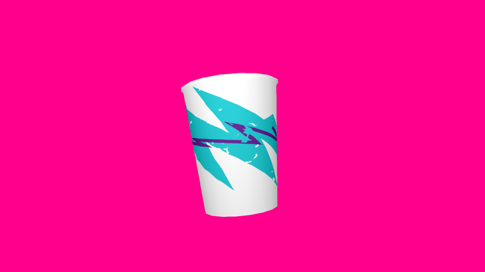
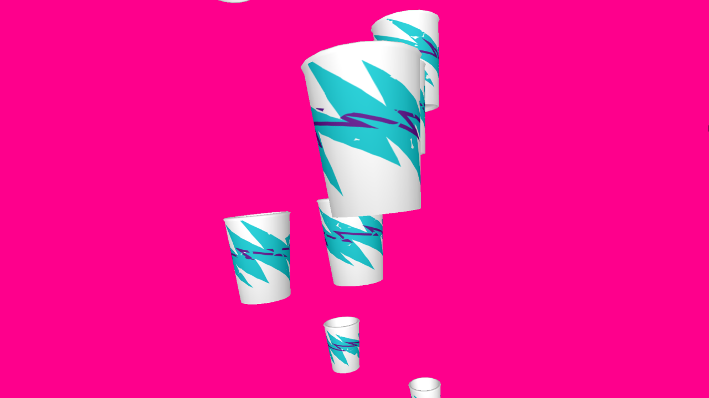

Jazz Solo Cup Generator - 2014-2015
Online Jazz solo cup generator built using HTML5 canvas and three.js. Made possible with plenty of help from Nick Briz and Peter Smyth.


Rain version: http://thnewlands.github.io/pages/jazzcupgenerator-rain/
Single cup version: http://thnewlands.github.io/pages/jazzsolocupgenerator/